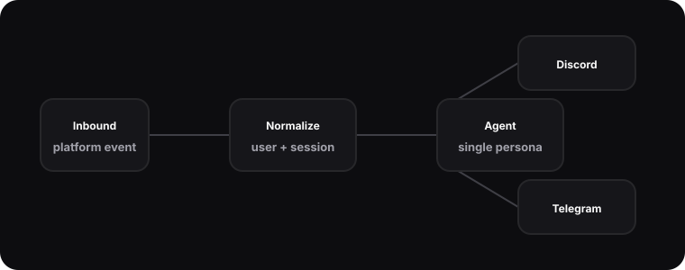

Hermes Gateway · One persona, many platforms
A routing layer that turns platform-specific events into stable agent sessions.

Problem
Chat platforms are not interchangeable. Discord has channels, threads, attachments, and bot permissions. Telegram has different delivery constraints and a different model for chats. Scheduled jobs do not look like chat messages at all. Without a gateway, every assistant feature becomes tangled with transport details.
The gateway exists to protect the agent from that complexity. It takes platform-native events and produces a normalized message with a user identity, text body, attachments, session key, and delivery adapter. That lets the assistant act like one persona without pretending all platforms are the same.
Design
The design is deliberately narrow. Inbound adapters parse platform events. The router loads or creates a session. The agent runs against that session. The outbound adapter formats the response for the original target. The shape is simple, but it creates a strong boundary: platform code handles platform behavior, and agent code handles reasoning and tool use.
This also improves testing. A router can be tested with a fake inbound message and a fake outbound target. The assistant does not need a live Discord server to prove that it can choose a skill, create a response, and preserve session context. For a personal system, that separation is the difference between being able to confidently change it and being afraid to touch it.
# illustrative
class DiscordAdapter:
def normalize(self, event):
return InboundMessage(
platform="discord",
user=f"discord:{event.author_name}",
text=event.content,
attachments=list(event.attachments),
reply_to=event.channel_ref,
)Failure modes
The hardest part of a gateway is not the happy path. It is partial failure. The agent may produce a response that is too long for a target. A media artifact may finish after the original interaction window closes. A platform may rate-limit outbound messages. The gateway needs to degrade gracefully by splitting messages, posting delayed updates, or returning a concise failure note.
I avoid hiding these cases behind generic exceptions. Each adapter owns its delivery constraints, and the router records enough context to explain what happened. That gives the system operational texture: when something fails, I can usually tell whether the issue was a model call, a tool call, a platform limit, or my own routing logic.
The gateway also gives me a clean place to apply policy. If a platform event includes attachments, the adapter can describe them without assuming the agent should process them. If a response needs to mention a file, the delivery layer can decide whether that platform supports an upload, a link, or a plain-text fallback. The agent stays focused on intent while the gateway handles transport reality.
That separation becomes more valuable as features grow. Adding a new platform should require a new adapter and a few routing tests, not a rewrite of every assistant capability. It is the same lesson I have learned from backend work generally: strong internal contracts make small systems feel larger than they are.
What I learned
Agent systems need boring infrastructure. Normalization, routing, and delivery are not glamorous, but they make the assistant feel coherent. The gateway taught me to treat every interface as a product surface, including the internal ones. Good boundaries reduce surprise.
It also taught me to design for replacement. If a platform changes its API or a new chat surface becomes useful, the rest of Hermes should not care very much. The gateway is successful when the assistant’s memory, skills, and tool calls remain stable while the edge adapters evolve.